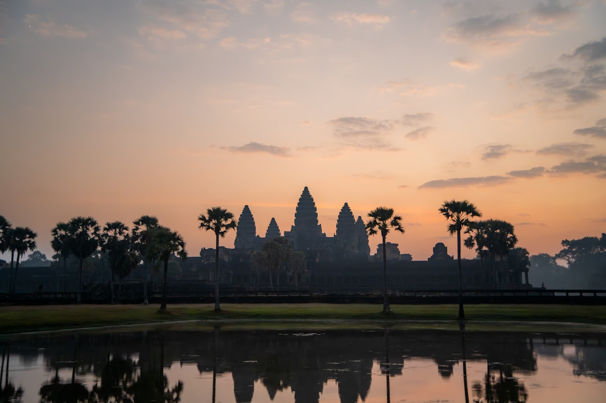
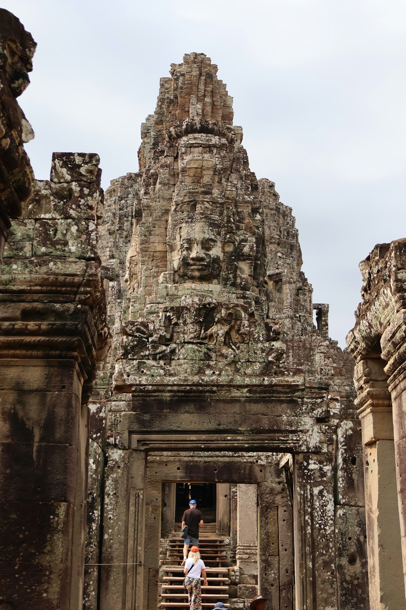
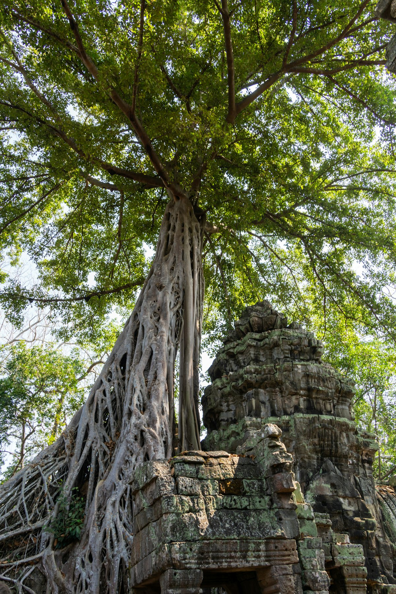
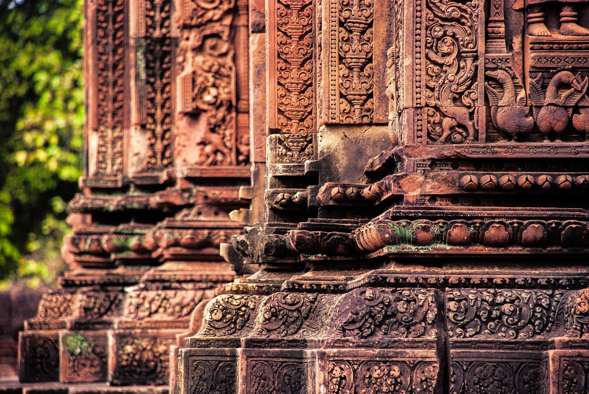
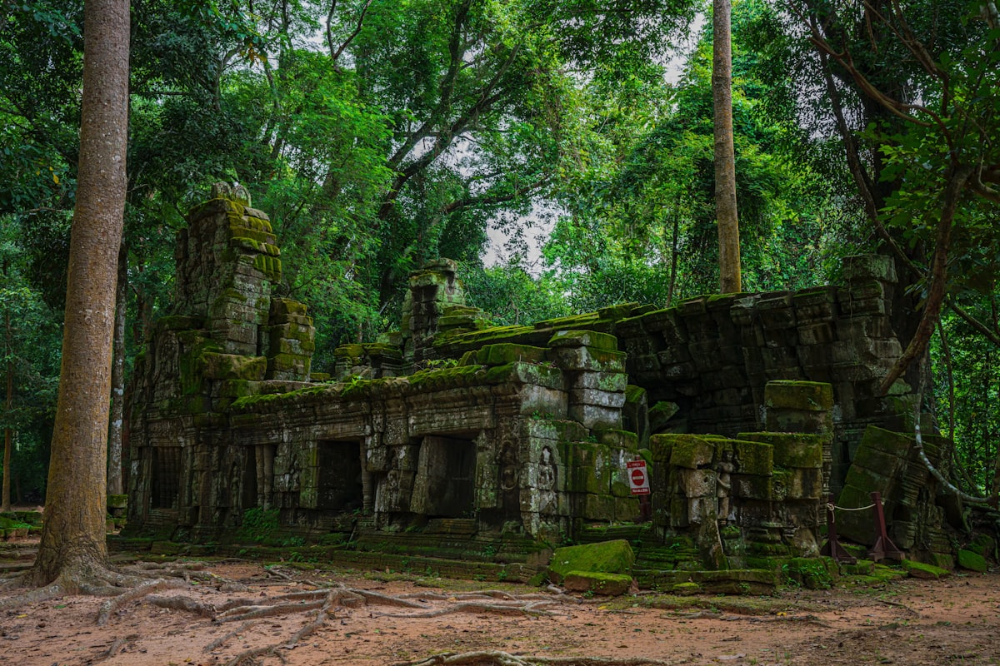
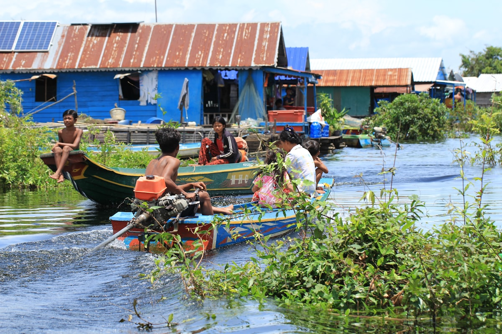
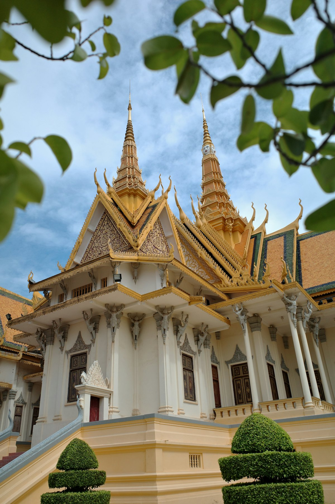
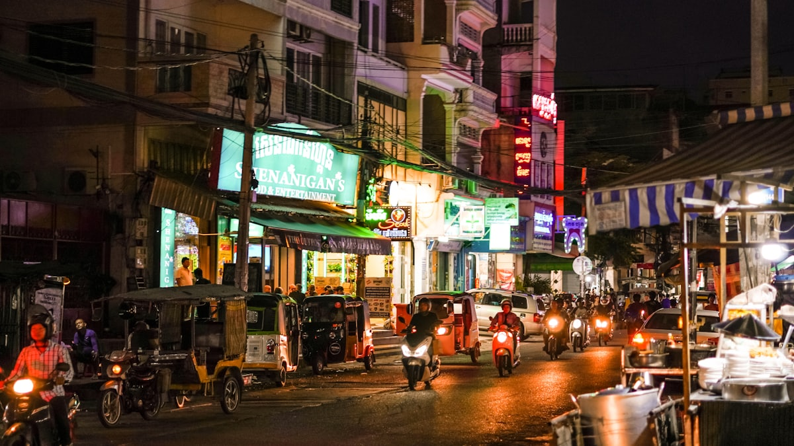

| 事项 | 结论 |
|---|---|
| 事项 | 结论 |
| 签证（最关键） | 中国护照电子签/落地签约 30 美元（evisa.gov.kh 提前办）；2026-06-15 至 10-15 免签试点（单次≤14 天）；无论签证与否都须填免费电子入境卡（arrival.gov.kh） |
| 时差 | 比北京晚 1 小时（-1h），落地几乎无感 |
| 电源 | 230V，A/C/G 型插座（两扁脚/两圆脚/英式三脚混用），国标两扁脚多数可直接插 |
| 货币/支付 | 通用美元 + 瑞尔（1 美元≈4100 瑞尔≈7 元）；现金为王，大店可刷卡/支付宝（ABA Pay），单笔超约 45 元支付宝易触发风险提示 |
| 推荐方案 | 金边 2 天（皇宫/银塔寺/博物馆/监狱博物馆）+ 暹粒 5 天（吴哥小圈大圈外圈 3 日票 $62） |
| 预算（人均） | 经济 4000–6000 ／ 标准 7000–11000 ／ 舒适 16000–24000（人民币） |
| 三件提前事 | ① 办电子签/填电子入境卡 ② 吴哥 3 日票官方线上买（省排队） ③ 旺季（11–2 月）住宿提前 2–3 周 |
| 季节提醒 | 11 月–次年 3 月旱季最佳，12–1 月最凉爽；5–10 月雨季游客少、住宿折扣大，但日出云层多 |
以下为 8 天 7 晚的推荐节奏：金边 2 天了解首都与近代史，第 3 天飞或坐大巴到暹粒，连续 5 天刷吴哥三圈与洞里萨湖。每日主景点 ≤2 个，早晚错峰避开烈日。
| 日期 | 行程 | 过夜地 | 主题 |
|---|---|---|---|
| D1 抵金边 | 北京✈金边（转机约 6–8h），入住河滨/皇宫区，傍晚四臂河畔散步看日落 | 金边 | 抵达+预热 |
| D2 | 金边皇宫+银塔寺 → 柬埔寨国家博物馆 → 监狱博物馆 S-21 → 中央市场/河边夜市 | 金边 | 首都人文 |
| D3 | 上午塔山寺/独立纪念碑，午后大巴（5–7h）或飞（50min）到暹粒，住老市场/酒吧街 | 暹粒 | 转场暹粒 |
| D4 | 吴哥小圈：吴哥窟日出 → 吴哥窟主殿 → 巴戎寺高棉微笑 → 巴方寺 → 塔普伦寺树抱石 | 暹粒 | 小圈精华 |
| D5 | 吴哥大圈：圣剑寺 → 龙蟠水池 → 塔逊寺 → 东梅奔寺 → 比粒寺 → 巴肯山日落 | 暹粒 | 大圈巡礼 |
| D6 | 吴哥外圈：女王宫 → 崩密列 → 罗洛斯遗址（巴孔寺/神牛寺） | 暹粒 | 外圈秘寺 |
| D7 | 吴哥热气球日出 → 洞里萨湖空邦鲁浮村半日 → 老市场/酒吧街夜生活 | 暹粒 | 湖上天空 |
| D8 返程 | 上午自由活动/补货 → 暹粒✈金边转机返京（或经金边），到家休息 | — | 收尾 |
以下为 8 天全程的逐小时执行时间线，可当作「当天打开照着走」的清单。标注 ※ 的可选项视体力与天气取舍。
| 时间 | 事项 |
|---|---|
| 07:00–13:00 | 北京✈金边（无直飞，经广州/昆明/香港转机，总时长约 6–8h）；提前填好电子入境卡，落地办入境 |
| 13:30–15:00 | 机场→市区：突突车约 $10–15 或酒店接机，入住湄公河畔/皇宫区酒店 |
| 16:00–18:00 | 西索瓦码头 Sisowath Quay（免费）：沿河步道散步，看四臂河（湄公河+洞里萨河交汇）日落 |
| 18:30–20:30 | 金边夜市（周末开放）：烤串、鲜榨果汁、吴哥啤酒，人均 $3–6 |
| 时间 | 事项 |
|---|---|
| 08:30–11:00 | 金边皇宫 + 银塔寺（联票 $10 现金）：王座厅、银殿 5329 块银砖、翡翠玉佛，着装须遮肩盖膝 |
| 11:00–13:00 | 柬埔寨国家博物馆（$10）：吴哥雕塑与高棉文物精品，先看这里再去吴哥会更容易看懂 |
| 14:30–16:30 | 监狱博物馆 S-21（约 $5）：红色高棉集中营旧址，沉重但值得；时间充裕可加钟屋屠杀场 |
| 17:00–19:30 | 中央市场/俄罗斯市场淘银器与丝巾，河边晚餐：阿莫克鱼 + 高棉咖喱 |
| 时间 | 事项 |
|---|---|
| 08:30–10:30 | 塔山寺（$1）与独立纪念碑（免费）：金边最后的悠闲上午 |
| 11:30–18:00 | 金边→暹粒：VIP 大巴 5–7h（$11–17）一路看乡村风光；或飞机 50min（约 $60–90） |
| 18:30–19:30 | 入住暹粒老市场/酒吧街（Pub Street）周边，步行可达餐厅与夜市 |
| 19:30–21:30 | 酒吧街晚餐 + 吴哥啤酒，顺便订好第二天的日出包车/突突车 |
| 时间 | 事项 |
|---|---|
| 04:30–06:30 | 吴哥窟日出：5:00 前到西塔门占位，莲花池倒影机位最经典，春分/秋分可见红日挂塔尖 |
| 06:30–09:30 | 吴哥窟主殿：回廊浮雕「搅拌乳海」+ 须弥山五塔登顶（第三层限流，7 点前人少） |
| 10:00–12:00 | 巴戎寺·高棉的微笑：54 座四面佛塔，找「最温柔的一张脸」 |
| 13:00–14:00 | 吴哥通王城南门 + 巴方寺（空中寺庙）浅逛 |
| 14:30–17:00 | 塔普伦寺（《古墓丽影》取景地）：卡波克巨树抱石，下午光线穿过树隙很出片 |
| 时间 | 事项 |
|---|---|
| 08:00–09:30 | 圣剑寺 Preah Khan：阇耶跋摩七世为父而建，两层回廊与石室充满迷宫感 |
| 09:30–10:30 | 龙蟠水池 Neak Pean：湖心岛涅槃庙，曾经的皇家疗养圣池 |
| 10:30–11:30 | 塔逊寺 Ta Som + 东梅奔寺 East Mebon：砖塔与大象石雕 |
| 13:00–14:30 | 比粒寺 Pre Rup：砖塔废墟登高，人少安静的出片点 |
| 16:30–18:30 | 巴肯山日落 Phnom Bakheng：全景区限流 300 人，旺季 16:00 前上山占位，日落金山与吴哥窟同框 |
| 时间 | 事项 |
|---|---|
| 07:00–09:30 | 女王宫 Banteay Srei：粉红砂岩雕刻最细腻，被称为「吴哥的艺术之钻」，早到人最少、光线最好 |
| 09:30–11:00 | 途中可顺路：地雷博物馆（$5）或高布斯滨（雨季水流最壮观） |
| 11:00–13:00 | 回暹粒午餐避暑（外圈景点中午极晒） |
| 14:00–16:30 | 崩密列 Beng Mealea：未修复的丛林废墟，坍塌回廊与巨树共生，探险感十足 |
| 17:00–18:30 | 罗洛斯遗址：巴孔寺 + 神牛寺，吴哥王朝最早的首都遗址群 |
| 时间 | 事项 |
|---|---|
| 05:30–06:30 | 吴哥热气球日出（Angkor Balloon 系留氦气球，$20–25/成人，10 分钟 120 米高空俯瞰吴哥窟全景）；风大停飞，前一晚确认 |
| 09:00–11:00 | 吴哥国家博物馆（$12）：用讲解把三圈故事「预习」一遍，馆内有空调很舒适 |
| 13:30–18:30 | 洞里萨湖·空邦鲁浮村（拼团约 ¥100–150 含接送）：高脚屋村落 + 红树林小船（$5）+ 湖上日落 |
| 19:00–21:00 | 老市场（Old Market）买高棉银器/丝巾，酒吧街晚餐收官 |
| 时间 | 事项 |
|---|---|
| 07:00–09:00 | 自由活动：吴哥窟二次日出 / 酒店泳池 / 补买伴手礼（棕榈糖、高棉咖啡） |
| 09:30–10:30 | 退房，暹粒国际机场距市区约 7km（突突车 $5） |
| 11:00–13:00 | 暹粒✈金边（约 50min），预留 3 小时转机时间 |
| 14:00–22:00 | 金边✈北京（转机约 6–8h），入境到家 |
必去（必去）/ 顺路（顺路）/ 可跳过（可跳过）。

必去
必去
必去
顺路
必去
必去
顺路图片为 Unsplash 主题图（吴哥窟日出、巴戎寺、塔普伦寺、女王宫、崩密列、洞里萨湖、金边皇宫、柬埔寨夜市均为柬埔寨实景或同主题图），用于页面配图。更多低费/免费玩法：巴肯山日落、塔山寺（$1）、四臂河游船（$3–6）、吴哥国家博物馆（$12）。
点击左侧节点可在地图上定位；点击地图 marker 会高亮对应节点。坐标为 WGS-84 转 GCJ-02 纠偏后标注。
以下为单人、不含购物的估算，人民币计价；出发地基准北京。汇率按 1 元 ≈ 620 柬埔寨瑞尔估算，当地普遍通用美元（1 美元 ≈ 7 元 ≈ 4100 瑞尔）。往返国际机票按转机 2500–3800 元计，吴哥 3 日票按 $62（约 450 元）计。
| 项目 | 经济（4000–6000） | 标准（7000–11000） | 舒适（16000–24000） |
|---|---|---|---|
| 往返机票 | 北京⇄金边 转机 2500–3000 | 转机更优时刻 3200–4000 | 商务舱/直飞组合 7000–10000 |
| 住宿（7 晚） | 民宿/青旅 120–250/晚 | 精品酒店 300–600/晚 | 度假村/星级 1000–2000/晚 |
| 交通（境内） | 大巴+突突车 400–600 | 境内航班+部分包车 800–1200 | 全程包车/接送 3000–4500 |
| 门票 | 吴哥 3 日票+皇宫+博物馆约 700–900 | 含洞里萨湖拼团+博物馆约 1000–1300 | 含热气球+私导+演出 3000–4500 |
| 餐饮（8 天） | 街边+简餐 800–1200 | 正常下馆子 1500–2200 | 高棉料理+酒水 4000–6000 |
雨季吴哥游客少、门票住宿便宜 30–50%，洞里萨湖水位高浮村更壮观；但日出云层厚、个别土路难走。建议把日出改为清晨 7 点后入园，随身带轻便雨具与防滑鞋，午后常有短时阵雨，正好回酒店午休。
带老人小孩建议：金边住皇宫区、暹粒住老市场，吴哥只走小圈（吴哥窟+巴戎寺+塔普伦）拆两天慢慢看，中午必回酒店午休；外圈崩密列换成吴哥国家博物馆（空调+电梯+讲解）；洞里萨湖浮村晕船者慎选，可改沙乐市场+吴哥夜市。
| 方式 | 时长 | 参考价 | 备注 |
|---|---|---|---|
| 转机航班（唯一选择） | 北京→金边 总时长 6–8h | 往返 2500–4000 元 | 经广州/昆明/香港/曼谷转机，国航/南航/东航/柬埔寨航空 |
| 金边→暹粒 飞机 | 约 50min | 单程 300–650 元 | 柬埔寨航空/吴哥航空，每天多班 |
| 金边→暹粒 大巴 | 5–7h | $11–17 | Giant Ibis/Mekong Express，含酒店接送 |
| 金边→暹粒 快船 | 雨季 5–7h | $25–35 | 湄公河逆流而上，仅 5–10 月水位足时运营 |
| 区域 | 价格/晚 | 优点 | 短板 |
|---|---|---|---|
| 金边·河滨/皇宫区 | 经济 120–250 / 标准 300–500 | 景点步行可达，河景日落 | 晚上河滨较吵 |
| 金边·俄罗斯市场 | 经济 100–200 | 地道生活气，夜市近 | 离景点稍远 |
| 暹粒·老市场/酒吧街 | 经济 130–280 / 标准 350–600 | 餐厅夜市步行可达，出行方便 | 酒吧街晚上热闹会吵 |
| 暹粒·Wat Bo/河畔 | 标准 300–550 / 精品 600–1000 | 安静、泳池度假感 | 去酒吧街需突突车 |
| 暹粒·奢华度假村 | 1000–2500（含早餐） | SPA/私享泳池/接送服务 | 距景区约 7km，靠酒店班车 |